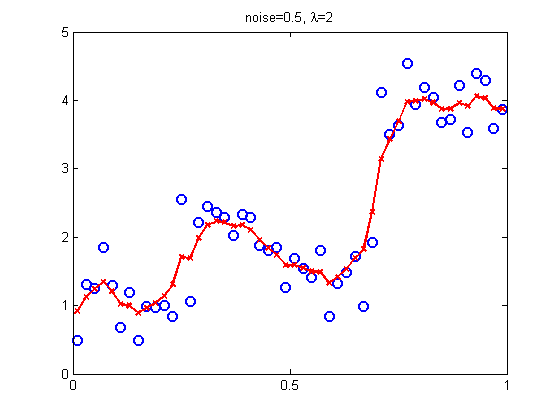
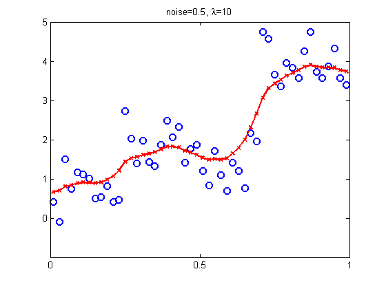
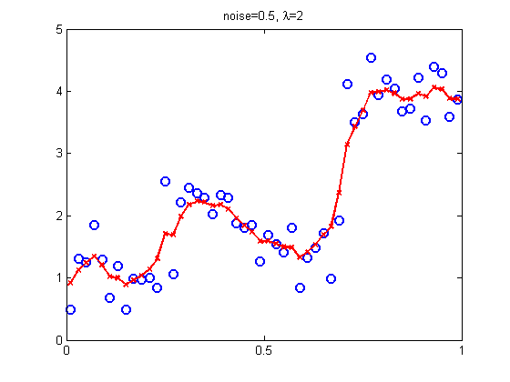
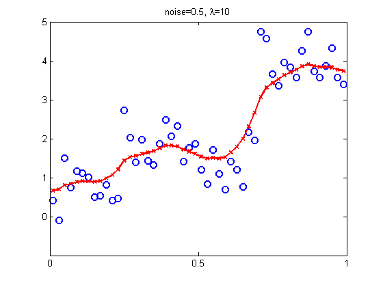

Tikhonov regularization for a piecewise smooth function
Based on code by Uri Ascher
Contents
function tikhonovDemo() setSeed(0); lambdas = [0.1 2 10]; for j = 1:numel(lambdas);
lambda = lambdas(j);
Generate data
N = 50;
noise = 0.5;
x = ((1:N)-0.5)./N;
y = fun(x) + randn(N, 1)*noise;
Form a band diagonal difference matrix
(see also spdiags)
D = diag(-ones(N, 1)) + diag(ones(N-1, 1), 1);
D(end, :) = [];
A = [eye(N); sqrt(lambda)*D];
b = [y; zeros(N-1, 1)];
w = A \ b;
figure(); hold on; plot(x, y', 'bo', 'linewidth', 2, 'markersize', 8); plot(x, w', 'rx-', 'linewidth', 2); set(gca, 'ytick', 0:5, 'xtick', 0:0.5:1); box on; title(sprintf('noise=%g, %s=%g', noise, '\lambda', lambda)); printPmtkFigure(sprintf('tikhonov%d', lambda));
  
  end end function u = fun(z) u = 4*ones(length(z), 1); u(z < 0.7) = 2 - 100.*(z(z<0.7) - 0.5) .* (0.7 - z(z<0.7)); u(z < 0.5) = 2; u(z < 0.25) = 1; end